Clase 4: Ley Cero, Trabajo y Calor
Las definiciones que sostienen todo el resto del curso: sistema y entorno, la ley cero que hace medible la temperatura, y el trabajo de expansión — que resulta depender del camino y separa lo reversible de lo irreversible.
Temas que cubre
- Formas de energía: cinética, potencial, térmica, química, nuclear, eléctrica
- Definiciones: sistema, frontera, medio ambiente; sistemas abierto, cerrado y aislado
- Ley cero de la termodinámica y la definición operacional de temperatura
- Enunciado de la primera ley para sistemas aislados y cerrados
- Definición termodinámica de trabajo y su convenio de signos
- Definición termodinámica de calor y su convenio de signos
- Trabajo de expansión contra presión de oposición: una, dos y varias etapas
- Trabajo de compresión y por qué cuesta más en una etapa que en varias
- Trabajo máximo (expansión) y mínimo (compresión): el límite cuasiestático
- Ciclo expansión–compresión: irreversible en un paso, reversible en infinitos pasos
Conceptos clave
Sistema, frontera, entorno
Abierto: intercambia materia y energía. Cerrado: sólo energía. Aislado (adiabático): ninguna de las dos. Casi todo el curso trabaja con sistemas cerrados de masa fija.
Ley cero
Dos sistemas que no están en contacto pero sí en equilibrio térmico con un tercero, están en equilibrio térmico entre sí y tienen idéntica temperatura. Sin esto la temperatura no sería una propiedad bien definida — ni existirían los termómetros.
Trabajo
Cantidad que fluye por la frontera durante un cambio de estado y que puede usarse íntegramente para elevar un cuerpo en el entorno. Se manifiesta en el entorno: la medida es $mgh$. Sólo existe durante el cambio de estado — no es una propiedad del sistema.
Calor
Lo que fluye entre dos sistemas al alcanzar el equilibrio térmico, desde el de mayor $T$ al de menor $T$. También se mide por su efecto en el entorno: gramos de agua que suben un grado. Igual que el trabajo, sólo existe en la frontera y durante el proceso.
Presión de oposición $P_{\text{op}}$
El trabajo se calcula con la presión externa, no con la del sistema. $P_{\text{op}}$ es arbitraria: la fija quien opera el pistón. Sólo en el límite cuasiestático se cumple $P_{\text{op}} = P_{\text{sist}}$.
Reversible vs. irreversible
Si el ciclo expansión–compresión deja el entorno modificado ($W_{\text{ciclo}} \neq 0$), el proceso fue irreversible. Si el entorno vuelve exactamente a su estado original ($W_{\text{ciclo}} = 0$), fue reversible. El sistema vuelve a su estado en ambos casos: lo que distingue es el entorno.
Fórmulas fundamentales




Qué hay que entender
- Convenio de signos de este curso: $W > 0$ cuando el sistema produce trabajo (se expande), y la primera ley se escribirá $\Delta U = Q - W$. Muchos textos de física usan el convenio opuesto — al comparar con otras fuentes, revisar primero cuál usan.
- El trabajo se calcula con $P_{\text{op}}$, la presión externa. Usar la presión del sistema es válido sólo si el proceso es cuasiestático.
- $W$ depende del camino: mismo estado inicial y final, distinto número de etapas, distinto trabajo. Esa es la razón de escribir $\bar\delta W$ y no $dW$.
- Más etapas $\Rightarrow$ más trabajo producido en expansión y menos trabajo gastado en compresión. El límite de infinitas etapas es el proceso reversible.
- La irreversibilidad se detecta mirando el entorno tras un ciclo completo, no el sistema: el sistema siempre vuelve a su estado.
- Ni $Q$ ni $W$ son propiedades del sistema: no tiene sentido decir "este gas contiene tanto calor". Sólo existen mientras hay un cambio de estado en curso.